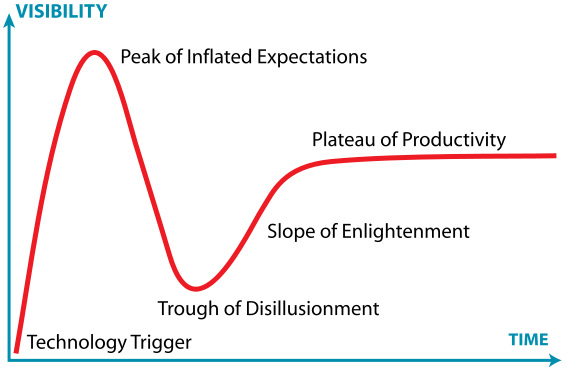
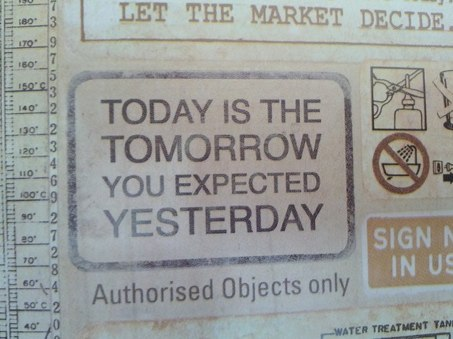
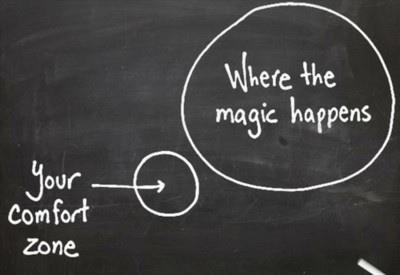

Apps are Boring! Games are Fun!
Apps are Boring! Games are Fun!
William Reynolds, Mozilla, AppDays 2013, Manila, Philippines, 01/27/2013
Say hi to @tofumatt
@tofumatt

I am @dailycavalier

Is There a Giants Game Today?
Remember your first game?
Captain Comic
What game would you play?

- Board / card games
- Puzzles
- Arcade games
- Sports
- Educational
- Community

The hype cycle
The great things about HTML5
- Promotion of HTML to an application platform
- World-wide availability without waiting for hardware
- Flexibility - give users what their environment can stomach
- Simple development environment - just start writing
- Simple deployment - put it on a server and you're done

Firefox OS - we're on it!

Run Little Boy, Run!
BananaBread
Your games can access phones

http://arewemobileyet.com

Serpent
Make Bacon
Firefox OS Simulator 1.0 is here!


Firefox Marketplace
Taking markets to the web…

The time is now, the place is here…

Shaun Tan: the lost thing
Off you go, make awesome!
